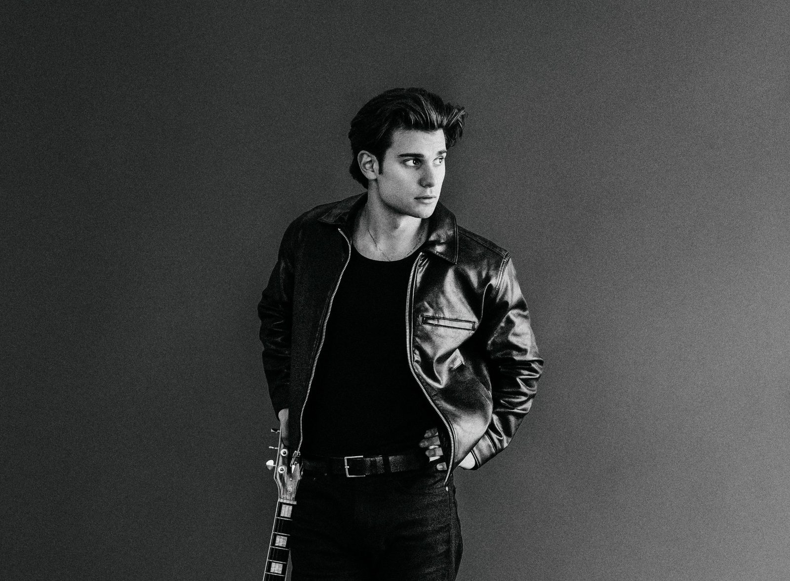
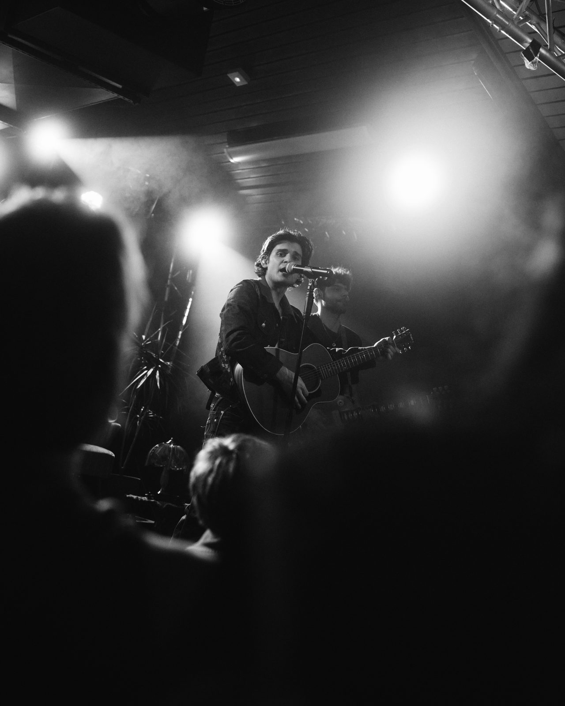
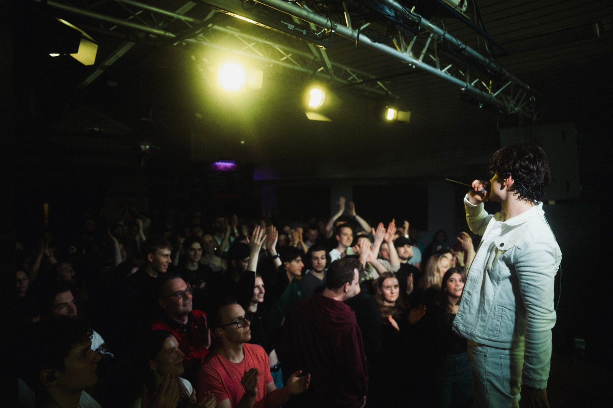
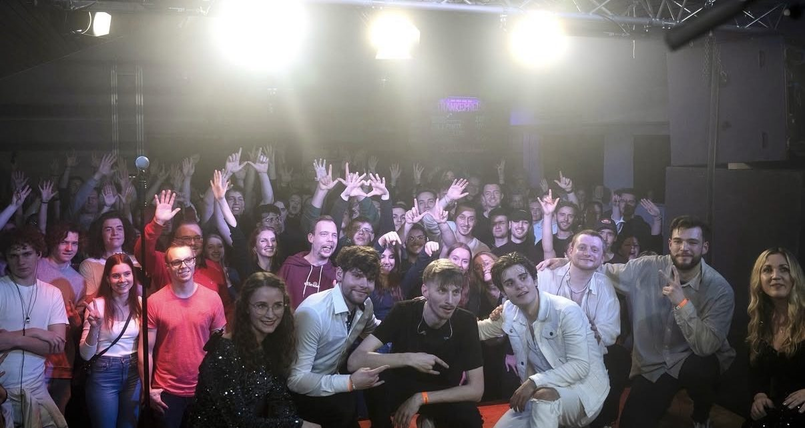
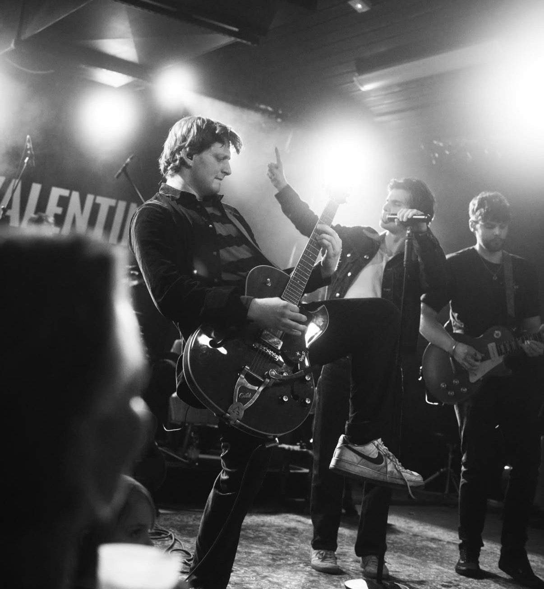
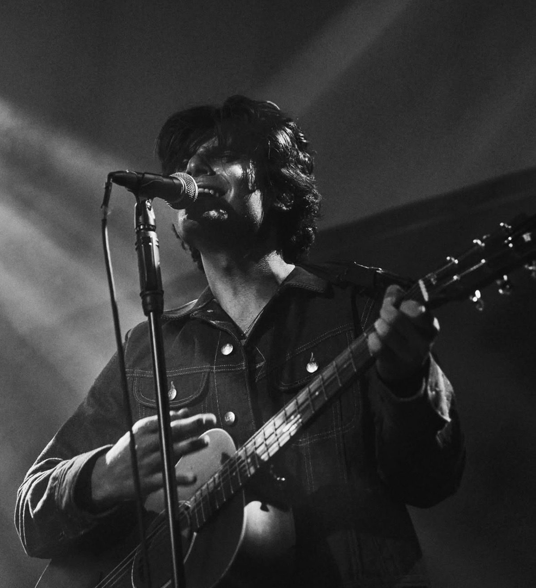
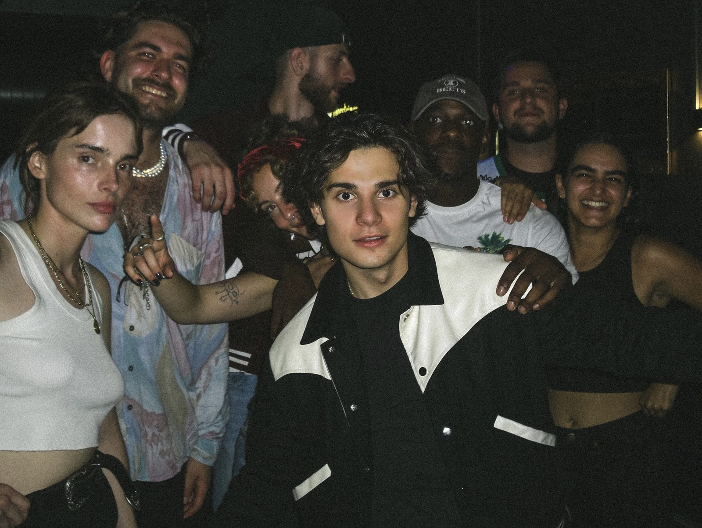
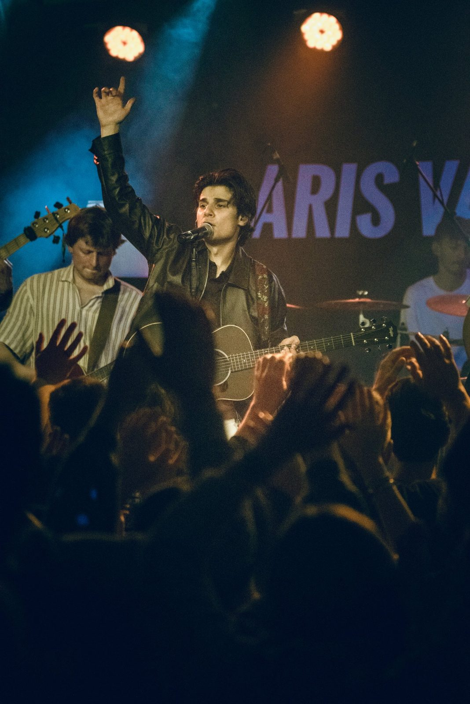
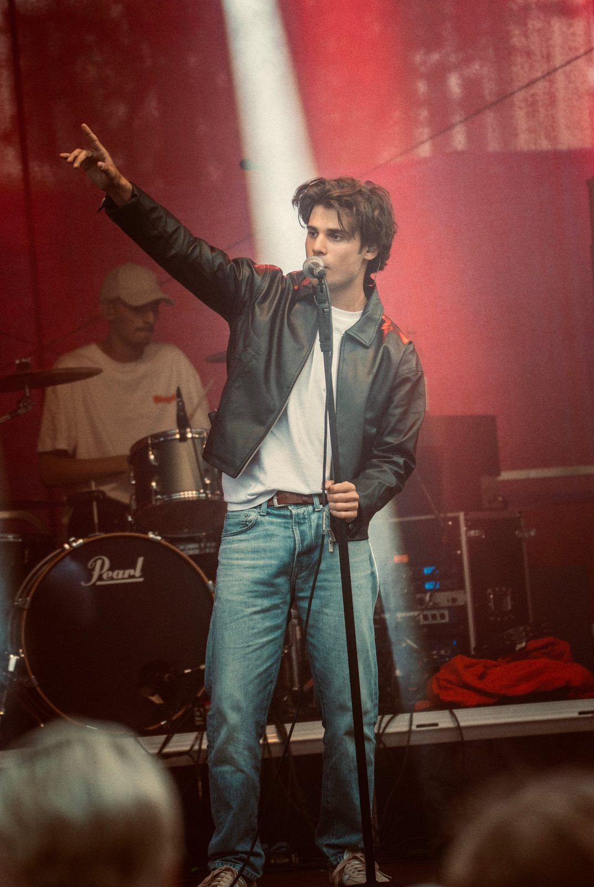
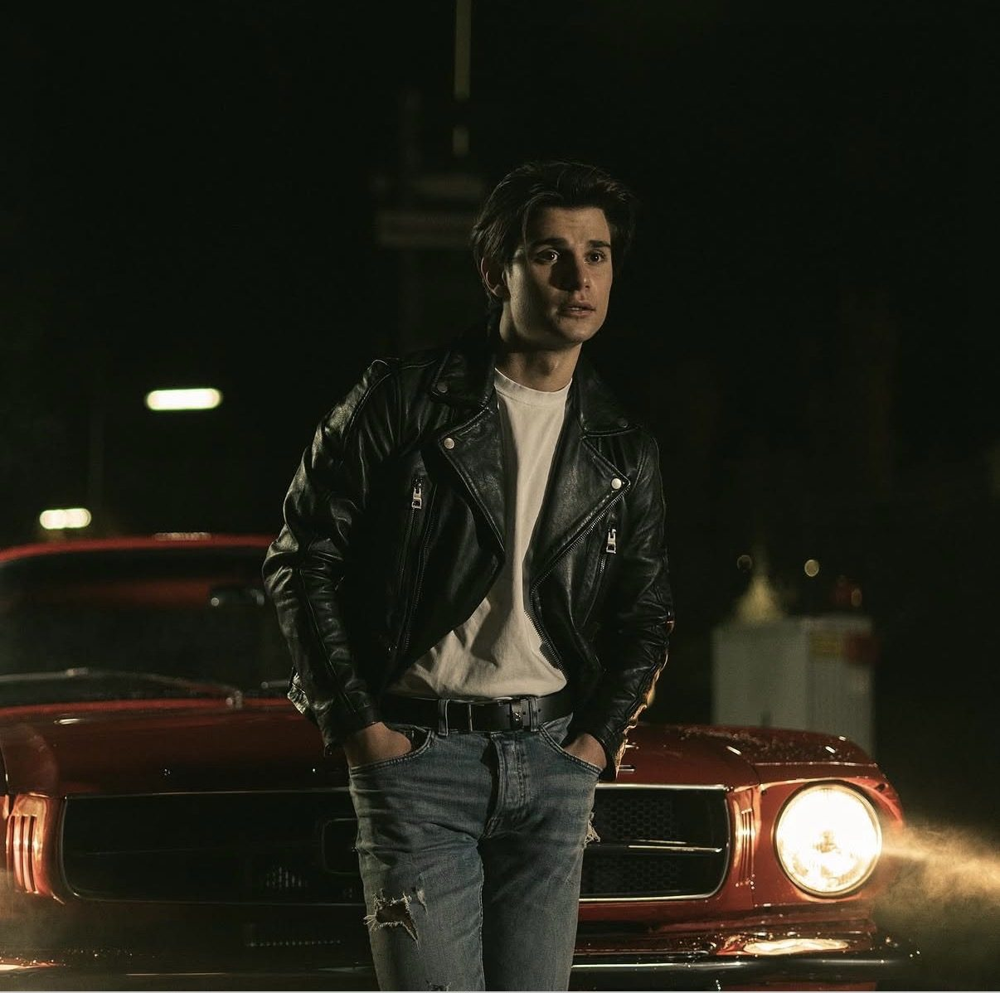

<title>Aris Valentino</title>
<meta name="claude:viewport-fit-sides" content="cover">
<meta name="description" content="Aris Valentino – pop singer and songwriter from the Ruhr Valley, based in Cologne. Music, live dates, videos and booking.">
<link rel="preconnect" href="https://fonts.googleapis.com">
<link rel="preconnect" href="https://fonts.gstatic.com" crossorigin>
<link rel="stylesheet" href="https://fonts.googleapis.com/css2?family=Archivo:wdth,wght@62..125,300..900&display=swap">
<style>
/* Layout: all black, single look. Full-bleed portrait fades into the page, giant name on top. Sections are just a huge uppercase word + content; lists as hairline rows. The photo is the only colour. */
:root{
  --bg:#000000; --fg:#F2F2F0; --muted:#8C8C90; --line:#232325; --ph:#0E0E0F; --ph-line:#2E2E31;
  --f-display:"Archivo","Helvetica Neue",Arial,sans-serif;
  --f-body:"Archivo","Helvetica Neue",Arial,sans-serif;
  --f-mono:"Archivo","Helvetica Neue",Arial,sans-serif; /* labels: same family, small caps-style uppercase + tracking */
  --max:1240px;
  color-scheme:dark;
}
*{box-sizing:border-box}
html{scroll-behavior:smooth}
@media (prefers-reduced-motion: reduce){html{scroll-behavior:auto}}
body{background:var(--bg);color:var(--fg);font-family:var(--f-body);font-size:17px;line-height:1.6;-webkit-font-smoothing:antialiased}
a{color:inherit}
a:focus-visible,button:focus-visible{outline:2px solid var(--fg);outline-offset:3px}
.wrap{max-width:var(--max);margin:0 auto;padding-left:max(20px,env(safe-area-inset-left,0px));padding-right:max(20px,env(safe-area-inset-right,0px))}
.mono{font-family:var(--f-mono);font-weight:500;font-stretch:112%;font-size:12px;letter-spacing:.14em;text-transform:uppercase;color:var(--muted)}
body{font-variant-numeric:tabular-nums}

/* header */
body::before{content:"";position:fixed;inset:0 0 auto;height:env(safe-area-inset-top,0px);z-index:10;background:var(--bg)}
header{position:sticky;top:env(safe-area-inset-top,0px);z-index:9;background:linear-gradient(to bottom,rgba(0,0,0,.55),rgba(0,0,0,0));transition:background-color .3s}
header.solid{background:color-mix(in srgb,var(--bg) 82%,transparent);backdrop-filter:blur(12px)}
header .wrap{display:flex;align-items:center;justify-content:space-between;gap:16px;height:60px}
.logo{font-family:var(--f-display);font-weight:800;font-stretch:125%;font-size:14px;letter-spacing:.08em;text-decoration:none;white-space:nowrap}
nav{display:flex;align-items:center;gap:24px;font-size:13px;font-weight:500;letter-spacing:.04em;text-transform:uppercase}
nav a{text-decoration:none;color:var(--muted);transition:color .2s}
nav a:hover{color:var(--fg)}
.lang{display:flex;gap:2px;font-family:var(--f-mono);font-size:12px}
.lang button{all:unset;cursor:pointer;padding:4px 6px;color:var(--muted)}
.lang button[aria-pressed="true"]{color:var(--fg);text-decoration:underline;text-underline-offset:4px}
@media (max-width:860px){nav .nl{display:none}}

/* hero */
.hero{position:relative;margin-top:-60px;height:max(480px,calc(100svh - 90px));overflow:hidden}
.hero .frame{position:relative;height:100%;width:100%}
.hero img{display:block;width:100%;height:100%;max-width:none;object-fit:cover;object-position:50% 25%}
.hero .frame::after{content:"";position:absolute;inset:0;pointer-events:none;background:linear-gradient(to bottom,transparent 55%,var(--bg) 99%)}
.hero h1{position:absolute;z-index:1;left:0;right:0;bottom:0;margin:0;font-family:var(--f-display);font-weight:900;font-stretch:125%;text-transform:uppercase;line-height:.82;letter-spacing:-.02em;font-size:clamp(38px,7vw,104px);text-align:center;padding-bottom:clamp(8px,1.5vw,20px);padding-inline:max(12px,env(safe-area-inset-left,0px))}
.under{display:flex;flex-wrap:wrap;justify-content:space-between;align-items:center;gap:10px 24px;padding-block:22px 0}
.under .next{font-family:var(--f-mono);font-size:clamp(14px,1.2vw,16px);letter-spacing:.1em;text-transform:uppercase;color:var(--fg);border:0}
.under .next b{font-weight:500;color:var(--muted)}
.under a{color:var(--fg);text-decoration:none;border-bottom:1px solid var(--line)}
@media (max-width:640px){.hero{height:auto}.hero .frame{height:auto;aspect-ratio:4/5;max-height:80svh}.hero img{object-position:50% 20%}}

/* sections */
section{padding-block:clamp(64px,8vw,112px) 0}
h2{margin:0 0 clamp(20px,3vw,32px);font-family:var(--f-display);font-weight:800;font-stretch:125%;text-transform:uppercase;font-size:clamp(28px,3.6vw,44px);line-height:1;letter-spacing:-.01em}

/* rows (music + live) */
.rows{list-style:none;margin:0;padding:0;border-top:1px solid var(--line)}
.row{display:grid;grid-template-columns:minmax(0,1fr) auto;gap:8px 24px;align-items:center;padding-block:20px;border-bottom:1px solid var(--line);text-decoration:none;transition:padding .25s}
a.row:hover{padding-left:10px}
.row .t{font-family:var(--f-display);font-weight:700;font-stretch:112%;font-size:clamp(17px,1.8vw,21px);line-height:1.15;text-transform:uppercase;min-width:0}
.row .t small{display:block;font-family:var(--f-body);text-transform:none;font-weight:400;font-stretch:100%;font-size:15px;color:var(--muted);margin-top:4px}
.row .r{font-family:var(--f-mono);font-size:12px;letter-spacing:.1em;text-transform:uppercase;color:var(--muted);white-space:nowrap}
.row.album .t{font-size:clamp(22px,2.6vw,30px);font-weight:800;font-stretch:125%}
.date{grid-template-columns:auto minmax(0,1fr) auto;gap:8px clamp(16px,4vw,48px)}
.date time{font-family:var(--f-display);font-weight:800;font-stretch:125%;font-size:clamp(22px,2.6vw,30px);line-height:1;font-variant-numeric:tabular-nums}
@media (max-width:560px){.date{grid-template-columns:minmax(0,1fr)}}

/* past shows archive */
.past{margin-top:clamp(56px,7vw,88px)}
.past-head{display:flex;flex-wrap:wrap;justify-content:space-between;align-items:baseline;gap:8px 24px;margin-bottom:16px}
.past-head h3{margin:0;font-family:var(--f-display);font-weight:700;font-stretch:112%;text-transform:uppercase;font-size:16px;letter-spacing:.04em}
.years{border-top:1px solid var(--line)}
details.year{border-bottom:1px solid var(--line)}
details.year summary{list-style:none;display:grid;grid-template-columns:72px minmax(0,1fr) auto;align-items:center;gap:16px;padding-block:11px;cursor:pointer}
details.year summary::-webkit-details-marker{display:none}
details.year summary:focus-visible{outline:2px solid var(--fg);outline-offset:3px}
.year .y{font-family:var(--f-display);font-weight:800;font-stretch:112%;font-size:18px;line-height:1;font-variant-numeric:tabular-nums;transition:color .2s}
.year summary:hover .y{color:var(--muted)}
.year .chev{font-family:var(--f-mono);font-size:16px;line-height:1;width:16px;color:var(--muted);text-align:center;transition:transform .25s}
.year[open] .chev{transform:rotate(45deg)}
@media (prefers-reduced-motion: reduce){.year .chev{transition:none}}
.gigs{list-style:none;margin:0 0 12px 88px;padding:0}
.gig{display:grid;grid-template-columns:90px minmax(0,1fr) auto;gap:2px 16px;align-items:baseline;padding-block:8px;border-top:1px solid var(--line);font-size:14px}
@media (max-width:560px){.gigs{margin-left:0}}
.gig .d{font-family:var(--f-mono);font-size:13px;color:var(--muted);font-variant-numeric:tabular-nums}
.gig .e{font-weight:600;min-width:0}
.badge{display:inline-block;margin-left:10px;font-size:10px;font-weight:600;font-stretch:112%;letter-spacing:.12em;text-transform:uppercase;line-height:1;padding:4px 8px;border:1px solid var(--fg);border-radius:999px;vertical-align:2px}
.gig .w{color:var(--muted);text-align:right}
@media (max-width:560px){.gig{grid-template-columns:minmax(0,1fr)}.gig .w{text-align:left}}

.btn{display:inline-flex;align-items:center;gap:8px;text-decoration:none;font-weight:600;font-size:14px;letter-spacing:.04em;text-transform:uppercase;padding:12px 22px;border-radius:999px;background:var(--fg);color:var(--bg);white-space:nowrap}
.btn.ghost{background:transparent;color:var(--fg);border:1px solid var(--fg)}

/* about */
.about-short{display:block!important;max-width:820px}
.about-grid{display:grid;grid-template-columns:minmax(0,7fr) minmax(0,5fr);gap:clamp(28px,5vw,80px);align-items:stretch}
.about-text{display:flex;flex-direction:column;gap:clamp(28px,4vw,48px);min-width:0}
.about{display:grid;gap:18px;min-width:0}
.about p{margin:0;font-size:clamp(16px,1.25vw,18px);line-height:1.7;color:var(--muted)}
.about .lead{font-family:var(--f-display);font-weight:700;font-stretch:112%;font-size:clamp(22px,2.4vw,34px);line-height:1.15;color:var(--fg);text-wrap:balance;margin-top:-.15em}
.facts{margin:auto 0 0;display:grid;grid-template-columns:repeat(2,minmax(0,1fr));border-top:1px solid var(--line)}
.facts div{padding:16px 16px 16px 0;border-bottom:1px solid var(--line);min-width:0}
.facts div:nth-child(odd){padding-right:24px}
.facts dt{font-family:var(--f-mono);font-weight:500;font-stretch:112%;font-size:11px;letter-spacing:.14em;text-transform:uppercase;color:var(--muted);margin-bottom:6px}
.facts dd{margin:0;font-weight:600;font-size:16px}
.about-pic{position:relative;margin:0;aspect-ratio:4/5;overflow:hidden;background:var(--ph)}
.about-pic img{position:absolute;inset:0;display:block;width:100%;height:100%;object-fit:cover;object-position:50% 20%}
.about p:not(.lead){hyphens:auto;-webkit-hyphens:auto;hyphenate-limit-chars:6 3 3}
@media (min-width:861px){.about p:not(.lead){text-align:justify}}
@media (max-width:860px){.about-grid{grid-template-columns:minmax(0,1fr)}.about-pic{order:-1;max-height:62svh;width:100%}.about-pic img{object-position:50% 0%}}

/* placeholders */
.ph{background:var(--ph);border:1px dashed var(--ph-line);display:grid;place-items:center;text-align:center;padding:12px;font-family:var(--f-mono);font-size:11px;letter-spacing:.08em;text-transform:uppercase;color:var(--muted)}
.tag{font-family:var(--f-mono);font-size:11px;letter-spacing:.08em;text-transform:uppercase;color:var(--muted);border:1px dashed var(--ph-line);padding:2px 7px}

/* media */
.grid3{display:grid;grid-template-columns:repeat(3,minmax(0,1fr));gap:12px}
.grid3 .ph,.grid3 figure{aspect-ratio:4/5;margin:0}
.grid3.v .ph{aspect-ratio:9/16}
.grid3 img{width:100%;height:100%;object-fit:cover;display:block}
@media (max-width:640px){.grid3{grid-template-columns:repeat(2,minmax(0,1fr))}.grid3.v > :last-child{display:none}}

/* music: Spotify-style track rows with small cover art */
.row.track{grid-template-columns:48px minmax(0,1fr) auto;gap:8px 18px;padding-block:12px}
.track .art{display:block;width:48px;height:48px;object-fit:cover;background:var(--ph)}
@media (max-width:560px){.row.track{grid-template-columns:40px minmax(0,1fr) auto;gap:8px 14px}.track .art{width:40px;height:40px}}

/* videos: full-bleed wall of muted loops, two rows drifting in opposite directions */
html{overflow-x:clip}
.vid-head{display:flex;flex-wrap:wrap;align-items:baseline;justify-content:space-between;gap:8px 24px}
.vid-head h2{margin-bottom:clamp(16px,2vw,24px)}
.wall{--h:clamp(230px,36vh,400px);--gap:6px;position:relative;width:100vw;margin-left:calc(50% - 50vw);display:grid;gap:var(--gap);overflow:hidden;
  -webkit-mask-image:linear-gradient(to right,transparent 0,#000 6%,#000 94%,transparent 100%);mask-image:linear-gradient(to right,transparent 0,#000 6%,#000 94%,transparent 100%)}
.wall-row{display:flex;gap:var(--gap);width:max-content;margin-left:calc(var(--h) * -0.5625)}
.tile{flex:0 0 auto;height:var(--h);aspect-ratio:9/16;overflow:hidden;background:var(--ph)}
.tile video{display:block;width:100%;height:100%;object-fit:cover}
@media (prefers-reduced-motion: no-preference){
  .wall-row{animation:av-drift-l 22s ease-in-out infinite alternate}
  .wall-row:nth-child(2){animation-name:av-drift-r}
}
@keyframes av-drift-l{from{transform:translateX(0)}to{transform:translateX(calc((var(--h) * 0.5625 + var(--gap)) * -3))}}
@keyframes av-drift-r{from{transform:translateX(calc((var(--h) * 0.5625 + var(--gap)) * -3))}to{transform:translateX(0)}}
@media (max-width:760px){.wall{--h:clamp(190px,30vh,260px);--gap:4px}}
.reels-more{margin:18px 0 0}
.reels-more a{text-decoration:none;color:var(--muted)}
.reels-more a:hover{color:var(--fg)}

/* collage window: the collage sits fixed behind the page; this gap lets you look through it while scrolling */
.strip{position:relative;margin-top:clamp(56px,7vw,96px);height:clamp(110px,12vw,170px);clip-path:inset(0);background:var(--bg);
  -webkit-mask-image:linear-gradient(to bottom,transparent 0,#000 30%,#000 70%,transparent 100%),linear-gradient(to right,transparent 0,#000 12%,#000 88%,transparent 100%);
  -webkit-mask-composite:source-in;mask-image:linear-gradient(to bottom,transparent 0,#000 30%,#000 70%,transparent 100%),linear-gradient(to right,transparent 0,#000 12%,#000 88%,transparent 100%);mask-composite:intersect}
.strip .bg{position:fixed;inset:0;background-image:url("img/strip-bg.jpg");background-repeat:repeat;background-position:center;background-size:min(720px,88vw) auto;filter:brightness(.8) contrast(1.05);pointer-events:none}

/* gallery: masonry, black & white until hover (photo colour only on the hero) */
.masonry{columns:3;column-gap:12px}
.shot{all:unset;display:block;width:100%;margin:0 0 12px;break-inside:avoid;cursor:zoom-in;overflow:hidden;background:var(--ph)}
.shot img{display:block;width:100%;height:auto;filter:grayscale(1) contrast(1.06);transition:filter .5s ease,transform .8s cubic-bezier(.2,.7,.2,1)}
.shot:hover img,.shot:focus-visible img{filter:none;transform:scale(1.025)}
.shot:focus-visible{outline:2px solid var(--fg);outline-offset:3px}
@media (max-width:760px){.masonry{columns:2;column-gap:8px}.shot{margin-bottom:8px}}
.lb{position:fixed;inset:0;z-index:50;background:rgba(0,0,0,.95);display:grid;place-items:center;padding:calc(56px + env(safe-area-inset-top,0px)) max(56px,env(safe-area-inset-right,0px)) calc(56px + env(safe-area-inset-bottom,0px)) max(56px,env(safe-area-inset-left,0px))}
.lb[hidden]{display:none}
.lb img{display:block;max-width:100%;max-height:calc(100svh - 112px - env(safe-area-inset-top,0px) - env(safe-area-inset-bottom,0px));width:auto;height:auto;object-fit:contain}
.lb button{all:unset;cursor:pointer;color:var(--fg);font-family:var(--f-display);font-size:22px;line-height:1;padding:12px;opacity:.7;transition:opacity .2s}
.lb button:hover,.lb button:focus-visible{opacity:1}
.lb button:focus-visible{outline:2px solid var(--fg)}
.lb .lb-close{position:absolute;top:calc(8px + env(safe-area-inset-top,0px));right:max(8px,env(safe-area-inset-right,0px))}
.lb .lb-nav{position:absolute;top:50%;transform:translateY(-50%);font-size:28px}
.lb .lb-prev{left:max(4px,env(safe-area-inset-left,0px))}
.lb .lb-next{right:max(4px,env(safe-area-inset-right,0px))}
.lb-count{position:absolute;bottom:calc(18px + env(safe-area-inset-bottom,0px));left:0;right:0;text-align:center}
@media (max-width:560px){.lb{padding-inline:12px}.lb .lb-nav{top:auto;bottom:calc(4px + env(safe-area-inset-bottom,0px));transform:none}}

.longbio{margin-top:14px;max-width:820px}
.longbio summary{list-style:none;display:inline-flex;align-items:center;gap:8px;padding:2px 0;cursor:pointer;font-family:var(--f-mono);font-weight:500;font-stretch:112%;font-size:12px;letter-spacing:.14em;text-transform:uppercase;color:var(--fg);border-bottom:1px solid var(--line);transition:border-color .2s}
.longbio summary::-webkit-details-marker{display:none}
.longbio summary:hover{border-bottom-color:var(--fg)}
.longbio summary:focus-visible{outline:2px solid var(--fg);outline-offset:3px}
.lb-plus{font-size:13px;display:inline-block;transition:transform .25s}
.longbio[open] .lb-plus{transform:rotate(180deg)}
.longbio-body{display:grid;gap:14px;padding:18px 0 14px}
.longbio-body p{margin:0;color:var(--muted);line-height:1.7;font-size:clamp(15px,1.15vw,17px);max-width:68ch}
.longbio .copy{margin:0 0 20px}
@media (prefers-reduced-motion: no-preference){@supports (interpolate-size: allow-keywords){.longbio::details-content{height:0;overflow:clip;transition:height .4s ease,content-visibility .4s allow-discrete}.longbio[open]::details-content{height:auto}}}
.copy{all:unset;cursor:pointer;font-family:var(--f-mono);font-weight:500;font-stretch:112%;font-size:12px;letter-spacing:.14em;text-transform:uppercase;color:var(--muted);border-bottom:1px solid var(--line)}
.copy:hover{color:var(--fg)}
.copy:focus-visible{outline:2px solid var(--fg);outline-offset:3px}
/* contact */
.mail-ob{margin:0 0 28px}
.mail-ob .at{display:inline-block;margin:0 .3em;padding:.12em .32em .16em;border:2px solid var(--fg);font-size:.42em;letter-spacing:.12em;text-transform:uppercase;vertical-align:.45em;line-height:1}
.contact .big{display:block;font-family:var(--f-display);font-weight:700;font-stretch:112%;font-size:clamp(22px,4vw,48px);margin-bottom:28px;overflow-wrap:anywhere}
.btns{display:flex;flex-wrap:wrap;gap:12px}

footer{margin-top:clamp(100px,13vw,170px);border-top:1px solid var(--line);padding-block:24px 40px;font-size:13px;color:var(--muted)}
footer .wrap{display:flex;flex-wrap:wrap;justify-content:space-between;gap:16px}
footer .links{display:flex;flex-wrap:wrap;gap:20px}
footer a{text-decoration:none}
footer a:hover{color:var(--fg)}

/* motion: one load sequence on the hero, then quiet scroll reveals. All visible at rest; off for reduced motion. */
.hero h1 .w{display:inline-block;overflow:hidden;vertical-align:bottom;padding-bottom:.05em}
.hero h1 .w > span{display:inline-block}
a.row .r{transition:color .2s,transform .25s}
a.row:hover .r{color:var(--fg);transform:translateX(-4px)}
@media (prefers-reduced-motion: no-preference){
  .hero img{animation:av-zoom 2.6s cubic-bezier(.2,.7,.2,1) both}
  .hero h1 .w > span{animation:av-rise 1.1s cubic-bezier(.2,.8,.2,1) both}
  .hero h1 .w:nth-child(1) > span{animation-delay:.35s}
  .hero h1 .w:nth-child(2) > span{animation-delay:.5s}
  .under{animation:av-fade .9s ease 1s both}
  header .wrap{animation:av-fadeonly .9s ease .8s both}
  @supports (animation-timeline: view()){
    section h2,.rows,.about,.facts,.about-pic,.grid3,.shot,.past,.contact .big,.contact .btns{animation:av-reveal linear both;animation-timeline:view();animation-range:entry 0% entry 55%}
    .hero .frame{animation:av-parallax linear both;animation-timeline:scroll();animation-range:0 100vh}
  }
  @supports (interpolate-size: allow-keywords){
    :root{interpolate-size:allow-keywords}
    details.year::details-content{height:0;overflow:clip;transition:height .35s ease,content-visibility .35s allow-discrete}
    details.year[open]::details-content{height:auto}
  }
}
@keyframes av-zoom{from{transform:scale(1.08);filter:brightness(.55)}to{transform:none;filter:none}}
@keyframes av-rise{from{transform:translateY(105%)}to{transform:none}}
@keyframes av-fade{from{opacity:0;transform:translateY(10px)}to{opacity:1;transform:none}}
@keyframes av-fadeonly{from{opacity:0}to{opacity:1}}
@keyframes av-reveal{from{opacity:0;transform:translateY(36px)}to{opacity:1;transform:none}}
@keyframes av-parallax{to{transform:translateY(16%)}}
</style>

<header>
  <div class="wrap">
    <a class="logo" href="#top">ARIS VALENTINO</a>
    <nav aria-label="Main">
      <a class="nl" href="#about" data-en="Bio" data-de="Bio">Bio</a>
      <a class="nl" href="#live">Live</a>
      <a class="nl" href="#music" data-en="Music" data-de="Musik">Music</a>
      <a class="nl" href="#videos">Videos</a>
      <a href="booking.html">Booking</a>
      <div class="lang" role="group" aria-label="Language">
        <button type="button" id="btn-en" data-lang="en" aria-pressed="true">EN</button>
        <button type="button" id="btn-de" data-lang="de" aria-pressed="false">DE</button>
      </div>
    </nav>
  </div>
</header>

<main id="top">
  <div class="hero">
    <div class="frame"></div>
    <h1><span class="w"><span>Aris</span></span> <span class="w"><span>Valentino</span></span></h1>
  </div>
  <div class="wrap under">
    <a class="next" href="#live"><b data-en="Next show" data-de="Nächste Show">Next show</b> &nbsp;21.11.2026 · <span data-en="Cologne" data-de="Köln">Cologne</span> →</a>
    <span class="mono"><a href="https://open.spotify.com/intl-de/artist/7dVIsUVDF1mmZ0CbGANwhK">Spotify</a> &nbsp; <a href="https://instagram.com/arisvalentino1">Instagram</a></span>
  </div>

  <section id="about" class="wrap">
    <div class="about-grid about-short">
      <div class="about-text">
        <div class="about">
        <p class="lead" data-en="Big feelings, loud guitars and songs that feel lived-in." data-de="Große Gefühle, laute Gitarren und Songs, die sich nach Leben anfühlen.">Big feelings, loud guitars and songs that feel lived-in.</p>
        <p data-en="Aris Valentino grew up in Germany’s Ruhr Valley, has Greek-Cypriot roots and now lives in Cologne. Since 2021 he has been writing English-language songs about what your twenties are made of: freedom, longing, heartbreak and starting over. Live, with his band, it turns into a show where nobody stands still for long." data-de="Aris Valentino ist im Ruhrgebiet aufgewachsen, hat griechisch-zypriotische Wurzeln und lebt heute in Köln. Seit 2021 schreibt er englischsprachige Songs über das, woraus die Zwanziger bestehen: Freiheit, Sehnsucht, Herzschmerz und Neuanfänge. Live mit seiner Band wird daraus eine Show, bei der keiner lange stillsteht.">Aris Valentino grew up in Germany’s Ruhr Valley, has Greek-Cypriot roots and now lives in Cologne. Since 2021 he has been writing English-language songs about what your twenties are made of: freedom, longing, heartbreak and starting over. Live, with his band, it turns into a show where nobody stands still for long.</p>
        </div>
      </div>
    </div>
    <details class="longbio" id="longbio">
      <summary><span data-en="Read the full bio" data-de="Ausführliche Bio lesen">Read the full bio</span><span class="lb-plus" aria-hidden="true">↓</span></summary>
      <div class="longbio-body" id="longbio-text">
          <p data-en="Before Aris Valentino ever stepped on stage himself, he spent years behind the desk. He produced beats and wrote songs for hip-hop artists, around 200 of them. At some point that wasn’t enough. At the end of 2019 he took his first singing and guitar lessons. In 2020 he founded his own recording studio and label in Mettmann, and that is when it became clear: he didn’t just want to make songs for others, he wanted to be on stage himself." data-de="Bevor Aris Valentino selbst auf der Bühne stand, saß er jahrelang hinter den Reglern. Er produzierte Beats und schrieb Songs für Hip-Hop-Artists, rund 200 sind so entstanden. Irgendwann reichte ihm das nicht mehr. Ende 2019 nahm er seine ersten Gesangs- und Gitarrenstunden. 2020 gründete er in Mettmann ein eigenes Tonstudio und Label und merkte dabei endgültig: Er will nicht nur Songs für andere machen, sondern selbst auf die Bühne.">Before Aris Valentino ever stepped on stage himself, he spent years behind the desk. He produced beats and wrote songs for hip-hop artists, around 200 of them. At some point that wasn’t enough. At the end of 2019 he took his first singing and guitar lessons. In 2020 he founded his own recording studio and label in Mettmann, and that is when it became clear: he didn’t just want to make songs for others, he wanted to be on stage himself.</p>
          <p data-en="That drive didn’t come out of nowhere. Aris was born in Oberhausen, lived in Essen and now calls Cologne home. He is the grandson of Greek guest workers and of a Cypriot family that lost everything in the war on Cyprus and started over anyway. From them he learned to keep going. It shaped him in ice hockey, where he made it to the youth national team, on the theatre stage and finally in music." data-de="Der Antrieb dafür kommt nicht von ungefähr. Aris ist in Oberhausen geboren, hat in Essen gelebt und ist heute in Köln zuhause. Er ist Enkel griechischer Gastarbeiter und einer zypriotischen Familie, die durch den Krieg auf Zypern alles verloren und trotzdem neu angefangen hat. Von ihnen hat er gelernt, dranzubleiben. Das hat ihn geprägt, im Eishockey bis in die Nachwuchs-Nationalmannschaft, auf der Theaterbühne und schließlich in der Musik.">That drive didn’t come out of nowhere. Aris was born in Oberhausen, lived in Essen and now calls Cologne home. He is the grandson of Greek guest workers and of a Cypriot family that lost everything in the war on Cyprus and started over anyway. From them he learned to keep going. It shaped him in ice hockey, where he made it to the youth national team, on the theatre stage and finally in music.</p>
          <p data-en="In 2021 he released his first single, “Showtime”. A year later came the album “Rock is Red”, his answer to “rock is dead”. By the end of 2022 the band was complete, and together they have played more than 50 shows since. WDR Lokalzeit dedicated a feature to him and aired the music video for “Wonda”." data-de="2021 erschien mit „Showtime“ seine erste eigene Single. Ein Jahr später folgte das Album „Rock is Red“, seine Antwort auf den Satz „Rock is dead“. Ende 2022 stand die Band, mit der er seitdem über 50 Shows gespielt hat. Die WDR Lokalzeit widmete ihm einen eigenen Beitrag und zeigte das Musikvideo zu „Wonda“.">In 2021 he released his first single, “Showtime”. A year later came the album “Rock is Red”, his answer to “rock is dead”. By the end of 2022 the band was complete, and together they have played more than 50 shows since. WDR Lokalzeit dedicated a feature to him and aired the music video for “Wonda”.</p>
          <p data-en="Live is where Aris is most himself: pure energy, with moments in between that suddenly turn quiet and close. At the sold-out “Aris Valentino Show” in Essen he played for almost two hours, with a light show, choreography, an acoustic set and an unannounced aftershow. Add to that stages like Bochum Total, Zeltfestival Ruhr and Kessel-Festival in Stuttgart." data-de="Live ist Aris am meisten er selbst: Energie pur, und dazwischen Momente, in denen es plötzlich ganz still und nah wird. Bei der ausverkauften „Aris Valentino Show“ in Essen spielte er fast zwei Stunden, mit Lichtshow, Choreografie, Akustikset und einer unangekündigten Aftershow. Dazu kommen Bühnen wie Bochum Total, das Zeltfestival Ruhr und das Kessel-Festival in Stuttgart.">Live is where Aris is most himself: pure energy, with moments in between that suddenly turn quiet and close. At the sold-out “Aris Valentino Show” in Essen he played for almost two hours, with a light show, choreography, an acoustic set and an unannounced aftershow. Add to that stages like Bochum Total, Zeltfestival Ruhr and Kessel-Festival in Stuttgart.</p>
          <p data-en="Right now he is working on LIFELINE, his new album. It is a fresh start, fully pop this time. Not a break with the past, but a search for the sound that tells his story best." data-de="Gerade arbeitet er an LIFELINE, seinem neuen Album. Es ist ein Neuanfang, diesmal voll Pop. Kein Bruch mit dem, was war, sondern die Suche nach dem Sound, der seine Geschichte am besten erzählt.">Right now he is working on LIFELINE, his new album. It is a fresh start, fully pop this time. Not a break with the past, but a search for the sound that tells his story best.</p>
      </div>
      <button type="button" class="copy" id="copy-bio" data-en="Copy text" data-de="Text kopieren">Copy text</button>
    </details>
  </section>

  <section id="live" class="wrap">
    <h2>Live</h2>
    <div class="rows">
      <div class="row date">
        <time datetime="2026-11-21">21.11.</time>
        <span class="t">Let Me Introduce<small data-en="Cafe No. 5 · Cologne · time to be announced" data-de="Cafe No. 5 · Köln · Uhrzeit folgt">Cafe No. 5 · Cologne · time to be announced</small></span>
        <a class="btn ghost" href="#live">Tickets <span class="tag">Link</span></a>
      </div>
    </div>

    <p class="mono reels-more"><a href="booking.html#shows" data-en="All past shows ↗" data-de="Alle bisherigen Shows ↗">All past shows ↗</a></p>
  </section>

  <section id="music" class="wrap">
    <h2 data-en="Music" data-de="Musik">Music</h2>
    <div class="past-head">
      <h3 data-en="Latest releases" data-de="Neueste Releases">Latest releases</h3>
    </div>
    <div class="rows">
      <a class="row track" href="https://open.spotify.com/intl-de/artist/7dVIsUVDF1mmZ0CbGANwhK"><span class="t">Changes</span><span class="r">Single ↗</span></a>
      <a class="row track" href="https://open.spotify.com/intl-de/artist/7dVIsUVDF1mmZ0CbGANwhK"><span class="t">Miracle</span><span class="r">Single ↗</span></a>
      <a class="row track" href="https://open.spotify.com/intl-de/artist/7dVIsUVDF1mmZ0CbGANwhK"><span class="t">If It Ain't About Love</span><span class="r">Single ↗</span></a>
      <a class="row track" href="https://open.spotify.com/intl-de/artist/7dVIsUVDF1mmZ0CbGANwhK"><span class="t">Ride or Die</span><span class="r">Single ↗</span></a>
    </div>
  </section>

  <div class="strip" aria-hidden="true"><div class="bg"></div></div>

  <section id="videos" class="wrap">
    <div class="wall" id="wall" aria-label="Live clips">
      <div class="wall-row"></div>
      <div class="wall-row"></div>
    </div>
    <p class="reels-more mono"><a href="https://instagram.com/arisvalentino1" data-en="More on Instagram ↗" data-de="Mehr auf Instagram ↗">More on Instagram ↗</a></p>
  </section>

  <section id="photos" class="wrap">
    <h2 data-en="Photos" data-de="Fotos">Photos</h2>
    <div class="masonry" id="gallery">
      <button type="button" class="shot"></button>
      <button type="button" class="shot"></button>
      <button type="button" class="shot"></button>
      <button type="button" class="shot"></button>
      <button type="button" class="shot"></button>
      <button type="button" class="shot"></button>
      <button type="button" class="shot"></button>
      <button type="button" class="shot"></button>
      <button type="button" class="shot"></button>
      <button type="button" class="shot"></button>
      <button type="button" class="shot"></button>
      <button type="button" class="shot"></button>
    </div>
    <div class="lb" id="lb" hidden role="dialog" aria-modal="true" aria-label="Photo">
      
      <button type="button" class="lb-close" id="lb-close" aria-label="Close">✕</button>
      <button type="button" class="lb-nav lb-prev" id="lb-prev" aria-label="Previous photo">←</button>
      <button type="button" class="lb-nav lb-next" id="lb-next" aria-label="Next photo">→</button>
      <span class="lb-count mono" id="lb-count"></span>
    </div>
  </section>

  <section id="contact" class="wrap contact">
    <h2 data-en="Booking &amp; press" data-de="Booking &amp; Presse">Booking &amp; press</h2>
    <p class="big mail-ob" aria-label="mail at arisvalentino dot com">mail<span class="at">at</span>arisvalentino.com</p>
    <div class="btns">
      <a class="btn" href="booking.html" data-en="Booking info &amp; request" data-de="Booking-Infos &amp; Anfrage">Booking info &amp; request</a>
    </div>
  </section>
</main>

<footer>
  <div class="wrap">
    <span>© 2026 Aris Valentino</span>
    <div class="links">
      <a href="https://open.spotify.com/intl-de/artist/7dVIsUVDF1mmZ0CbGANwhK">Spotify</a>
      <a href="https://instagram.com/arisvalentino1">Instagram</a>
      <a href="#top">Impressum</a>
      <a href="#top" data-en="Privacy" data-de="Datenschutz">Privacy</a>
    </div>
  </div>
</footer>

<script>
(function(){
  function setLang(l){
    document.documentElement.lang = l;
    document.querySelectorAll('[data-en]').forEach(function(el){
      var t = el.getAttribute('data-' + l); if (t == null) return;
      var child = el.querySelector('small');
      if (child) { el.firstChild.nodeValue = el.firstChild.nodeValue; child.textContent = child.getAttribute('data-' + l) || child.textContent; }
      else el.textContent = t;
    });
    document.querySelectorAll('.lang button').forEach(function(b){ b.setAttribute('aria-pressed', b.dataset.lang === l ? 'true' : 'false'); });
    try { localStorage.setItem('av-lang', l); } catch(e){}
  }
  document.querySelectorAll('.lang button').forEach(function(b){ b.addEventListener('click', function(){ setLang(b.dataset.lang); }); });
  var saved = null; try { saved = localStorage.getItem('av-lang'); } catch(e){}
  setLang(saved || ((navigator.language||'').slice(0,2) === 'de' ? 'de' : 'en'));
  var hdr = document.querySelector('header');
  function onScroll(){ hdr.classList.toggle('solid', window.scrollY > 40); }
  window.addEventListener('scroll', onScroll, {passive:true}); onScroll();

  var reduce = window.matchMedia && window.matchMedia('(prefers-reduced-motion: reduce)').matches;
  /* Video wall: add new clips to this list, the wall fills itself. */
  var CLIPS = [
    {src:'vid2/w2.mp4', poster:'vid2/p2.jpg', t:0.07},
    {src:'vid2/w19.mp4', poster:'vid2/p19.jpg', t:1.2},
    {src:'vid2/w6.mp4', poster:'vid2/p6.jpg', t:1.47},
    {src:'vid2/w1.mp4', poster:'vid2/p1.jpg', t:1.83},
    {src:'vid2/w17.mp4', poster:'vid2/p17.jpg', t:1.77},
    {src:'vid2/w9.mp4', poster:'vid2/p9.jpg', t:1.97},
    {src:'vid2/w7.mp4', poster:'vid2/p7.jpg', t:0.9},
    {src:'vid2/w18.mp4', poster:'vid2/p18.jpg', t:1.33},
    {src:'vid2/w11.mp4', poster:'vid2/p11.jpg', t:1.93},
    {src:'vid2/w20.mp4', poster:'vid2/p20.jpg', t:1.8},
    {src:'vid2/w4.mp4', poster:'vid2/p4.jpg', t:2.43},
    {src:'vid2/w16.mp4', poster:'vid2/p16.jpg', t:0.87},
    {src:'vid2/w14.mp4', poster:'vid2/p14.jpg', t:1.67},
    {src:'vid2/w8.mp4', poster:'vid2/p8.jpg', t:2.1},
    {src:'vid2/w15.mp4', poster:'vid2/p15.jpg', t:1.53},
    {src:'vid2/w5.mp4', poster:'vid2/p5.jpg', t:0.63},
    {src:'vid2/w3.mp4', poster:'vid2/p3.jpg', t:1.2},
    {src:'vid2/w12.mp4', poster:'vid2/p12.jpg', t:1.87},
    {src:'vid2/w13.mp4', poster:'vid2/p13.jpg', t:2.33},
    {src:'vid2/w10.mp4', poster:'vid2/p10.jpg', t:1.67}
  ];
  var wall = document.getElementById('wall'), rows = wall.querySelectorAll('.wall-row'), wallVids = [], wallOn = false, lastCount = 0;
  var blobs = {};
  function viaBlob(v){
    var s = v.dataset.src; if (v.dataset.blob) return; v.dataset.blob = '1';
    var go = function(u){ v.src = u; if (wallOn) tryPlay(v); };
    if (blobs[s]) { blobs[s].then(go); return; }
    if (!window.fetch) return;
    blobs[s] = fetch(s).then(function(r){ return r.blob(); }).then(function(b){ return URL.createObjectURL(b); });
    blobs[s].then(go).catch(function(){});
  }
  function tryPlay(v){ var p = v.play(); if (p && p.catch) p.catch(function(err){ if (err && err.name === 'NotSupportedError') viaBlob(v); }); }
  function playAll(){ wallVids.forEach(tryPlay); }
  ['pointerdown','touchstart','keydown','wheel','scroll'].forEach(function(ev){ window.addEventListener(ev, function(){ if (wallOn) wallVids.forEach(function(v){ if (v.paused) tryPlay(v); }); }, {passive:true}); });
  function buildWall(){
    var h = rows[0].getBoundingClientRect().height || 300;
    var w = h * 9 / 16 + 6;
    var count = Math.ceil(window.innerWidth / w) + 5;
    if (count === lastCount) return; lastCount = count;
    wallVids = [];
    Array.prototype.forEach.call(rows, function(row, r){
      row.innerHTML = '';
      for (var i = 0; i < count; i++) {
        var c = CLIPS[(i + r * Math.ceil(CLIPS.length / 2) + (r ? 1 : 0)) % CLIPS.length];
        var t = document.createElement('div'); t.className = 'tile';
        var v = document.createElement('video');
        v.muted = true; v.loop = true; v.playsInline = true; v.setAttribute('playsinline', ''); v.setAttribute('muted', '');
        v.autoplay = true; v.setAttribute('autoplay', '');
        v.preload = 'metadata'; v.poster = c.poster; v.dataset.src = c.src; v.src = c.src; v.setAttribute('aria-hidden', 'true');
        v.addEventListener('error', function(){ viaBlob(this); });
        v.addEventListener('canplay', function(){ if (wallOn && this.paused) tryPlay(this); });
        (function(v, t){ v.addEventListener('loadedmetadata', function(){ try { v.currentTime = t; } catch(e){} }); })(v, c.t || 0);
        t.appendChild(v); row.appendChild(t); wallVids.push(v);
      }
    });
    if (wallOn) playAll();
  }
  rows[0].style.minHeight = 'var(--h)';
  buildWall();
  var rt; window.addEventListener('resize', function(){ clearTimeout(rt); rt = setTimeout(buildWall, 200); });
  if ('IntersectionObserver' in window) {
    new IntersectionObserver(function(es){ wallOn = es[0].isIntersecting; if (wallOn) playAll(); else wallVids.forEach(function(v){ v.pause(); }); }, {threshold:0, rootMargin:'100% 0px 100% 0px'}).observe(wall);
  } else { wallOn = true; playAll(); }

  var copyBio = document.getElementById('copy-bio');
  if (copyBio) copyBio.addEventListener('click', function(){
    var de = document.documentElement.lang === 'de';
    var txt = Array.prototype.map.call(document.querySelectorAll('#longbio-text p'), function(p){ return p.textContent; }).join('\n\n');
    var label = copyBio.textContent;
    var done = function(){ copyBio.textContent = de ? 'Kopiert' : 'Copied'; setTimeout(function(){ copyBio.textContent = label; }, 1800); };
    var fail = function(){ var r = document.createRange(); r.selectNodeContents(document.getElementById('longbio-text')); var sel = window.getSelection(); sel.removeAllRanges(); sel.addRange(r); };
    try { navigator.clipboard.writeText(txt).then(done, fail); } catch(e) { fail(); }
  });
  var shots = Array.prototype.slice.call(document.querySelectorAll('#gallery .shot'));
  var lb = document.getElementById('lb'), lbImg = document.getElementById('lb-img'), lbCount = document.getElementById('lb-count');
  var cur = 0, opener = null;
  function show(i){ cur = (i + shots.length) % shots.length; var im = shots[cur].querySelector('img'); lbImg.src = im.src; lbImg.alt = im.alt; lbCount.textContent = (cur + 1) + ' / ' + shots.length; }
  function openLb(i){ opener = shots[i]; show(i); lb.hidden = false; document.body.style.overflow = 'hidden'; document.getElementById('lb-close').focus(); }
  function closeLb(){ lb.hidden = true; document.body.style.overflow = ''; if (opener) opener.focus(); }
  shots.forEach(function(s, i){ s.addEventListener('click', function(){ openLb(i); }); });
  document.getElementById('lb-close').addEventListener('click', closeLb);
  document.getElementById('lb-prev').addEventListener('click', function(){ show(cur - 1); });
  document.getElementById('lb-next').addEventListener('click', function(){ show(cur + 1); });
  lb.addEventListener('click', function(e){ if (e.target === lb) closeLb(); });
  document.addEventListener('keydown', function(e){ if (lb.hidden) return; if (e.key === 'Escape') closeLb(); if (e.key === 'ArrowLeft') show(cur - 1); if (e.key === 'ArrowRight') show(cur + 1); });
  var tx = null; lb.addEventListener('touchstart', function(e){ tx = e.touches[0].clientX; }, {passive:true});
  lb.addEventListener('touchend', function(e){ if (tx === null) return; var dx = e.changedTouches[0].clientX - tx; if (Math.abs(dx) > 50) show(cur + (dx < 0 ? 1 : -1)); tx = null; });
})();
</script>
<script>document.querySelectorAll('a.logo[href="#top"]').forEach(function(a){a.addEventListener("click",function(e){e.preventDefault();window.scrollTo({top:0,behavior:"smooth"});if(location.hash)history.replaceState(null,"",location.pathname+location.search);});});if(location.hash==="#top")history.replaceState(null,"",location.pathname+location.search);</script>
